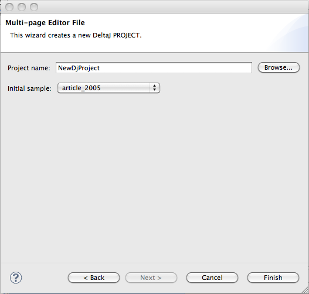

First of all, from the main menu choose File > New > Project. Then a project wizard list
window should appear.
Now choose DeltaJ > DJ Project and click on the Next button.
The immage below shows how should it be your current displaied window.

Please insert your files in the 'src' folder of your project if you want to generate java files from it.